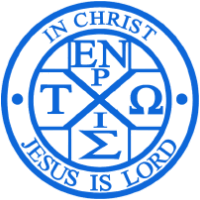

“凡呼求主名的，就必得救”
（徒二21，罗十13）
圣经恢复本
生命读经
诗歌
每日吗哪
新人喂养
七次特会
更多
✕
圣经恢复本（网页版）
圣经恢复本（Android）
圣经恢复本（iPhone）
✕
生命读经（网页版）
生命读经（Android）
生命读经（iPhone）
✕
诗歌（网页版）
诗歌（备用一）
诗歌（备用二）
诗歌（Android）
✕
新人喂养12课
新人喂养12课（Android离线版）
新人喂养12课（Windows离线版）
新人喂养48周
新人喂养48周（Android离线版）
新人喂养48周（Windows离线版）
圣经之旅
圣经之旅（Android离线版）
圣经之旅（Windows离线版）
✕
七次特会
七次特会（备用一）
七次特会（Android离线版）
七次特会（Windows离线版）
✕
灵粮
爱灵慕圣
属灵书报
生命的供应
网盘（密码52310）
读经一年一遍
圣城之光
水深之处
员林召会
全球召会
台湾众召会
基督身体的相调
一丛荆棘 NOTION
BREAK OPEN NOTION
Paul’s NOTION
Mygoodland
E-Shepherding
Stem of Jesse
Living Stream Ministry
发现新版本
请安装更新
安装
✕
使用APP
获取最佳体验
下载
✕
添加到主屏幕
点击底部
分享按钮，选择“添加到主屏幕”
✕
添加到主屏幕
享受更快的访问
添加
✕